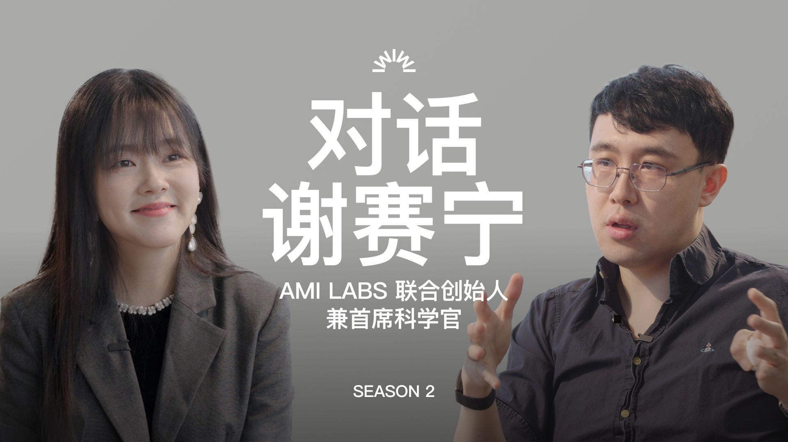

公司的研究发布、实验室博客和开源项目记录了 AI 的新进展；访谈与社区讨论里，还有研究者的工作经历、技术判断和想法。
AI 与机器人公司
语言、多模态与 AI 系统
 腾讯 · 混元
腾讯 · 混元
语言、多模态、图像与视频生成，提供混元系列开源模型、报告与示例。
 小米 · MiMo
小米 · MiMo
语言推理、视觉与语音模型，研究模型训练与架构设计。
 字节跳动 · Seed
字节跳动 · Seed
大模型、语音、视觉、世界模型与 AI 系统。
 月之暗面 · Kimi
月之暗面 · Kimi
长上下文、推理与 Agent，开放 Kimi 系列模型及技术报告。
 DeepSeek
DeepSeek
MoE、训练效率与推理模型，技术报告涵盖架构、训练与工程实现。
 阿里巴巴 · Qwen
阿里巴巴 · Qwen
语言、代码、视觉语言与全模态模型，发布模型权重、示例和技术报告。
 MiniMax
MiniMax
长上下文、推理及多模态生成，涉及注意力设计与推理效率。
 智谱 · GLM
智谱 · GLM
语言推理、代码和 Agent；GLM 系列提供模型实现、使用方法与研究材料。
 Google DeepMind
Google DeepMind
Gemini、机器人、强化学习与科学发现；论文页连接模型报告和具体研究。
 OpenAI
OpenAI
语言、多模态、推理与 Agent；研究发布和系统卡介绍能力、评测与模型行为。
 Anthropic
Anthropic
Claude、可解释性与对齐；研究文章常展开实验设计和模型内部行为。
 Meta AI
Meta AI
Llama、视觉与多模态研究；开放模型报告提供数据、训练和部署的系统描述。
NVIDIA
图形、生成模型、机器人与 AI 系统研究，发布论文、模型和开发工具。
xAI / SpaceXSI
Grok 模型、推理与工具调用，提供模型发布、评测和 API 文档。
机器人与具身智能
机器人团队的研究涉及仿真训练、人类操作数据、通用模型、技能适应与真机控制。
 Physical Intelligence · π
Physical Intelligence · π
研究让机器人完成多种操作任务的通用模型。π0、π0.5 把视觉、语言与动作连接起来，openpi 提供模型与训练、推理代码。
 银河通用 · Galbot
银河通用 · Galbot
围绕具身模型、机器人操作与移动作业开展研发，面向零售、搬运等场景。开发者平台提供感知、规划、控制、导航接口与仿真资源。
 智元机器人 · AGIBOT
智元机器人 · AGIBOT
研发人形机器人与具身智能模型，开放 AgiBot World 操作数据集、模型与开发工具。
 宇树科技 · Unitree
宇树科技 · Unitree
研发四足与人形机器人，G1、H1 等平台用于运动控制研究。Unitree RL Gym 提供强化学习训练与部署工具。
 星海图 · Galaxea
星海图 · Galaxea
同时研发轮臂机器人和具身模型，并开放训练与部署工具。G0.5 用同一个自回归模型生成推理与动作，结合跨本体动作编码和视觉历史记忆。
Fast-WAM 比较世界模型的两种作用：训练时学习预测未来，以及执行时真的生成未来。它保留前者、跳过后者，研究动作质量与推理延迟的取舍。
 苏度 · Sudo
苏度 · Sudo
从仿真训练出发，先解决陌生物体的抓取。官方发布的 sudo R1 使用纯仿真训练数据，每一步动作都根据最新观察调整，闭环频率为 15–25 Hz。
官网提供技术说明和 60 分钟连续抓取视频，演示包含移动目标、抓取干扰和狭窄空间绕障。
 它石智航 · TARS
它石智航 · TARS
研究如何把人类日常操作变成机器人学习的数据。WIYH 提供穿戴式采集设备、自动标注流程，以及超过 1,000 小时的多模态人类操作数据。
WIYH 涉及数据采集、标注与技能迁移；AWE 系列关注视触觉融合和精细接触操作，包括柔性线束装配。
 自变量 · X Square
自变量 · X Square
研究具身基础模型，以及机器人如何适应新任务。HOST 从一段人类示范视频获取新操作技能，在推理时利用示范，不更新模型参数。
WALL-SS 是动作可控的生成式机器人模拟器，研究长时序交互，以及仿真中的任务结果和策略排名能否对应真实机器人。
 穹彻 · Noematrix
穹彻 · Noematrix
围绕机器人操作研发具身模型、AnySkill 原子技能库，以及从采集到部署的工具链，涉及抓取、折叠和接触操作。
联合研究 RoboPocket 把策略预测的轨迹叠在手机画面上，让采集者看到潜在错误、补充纠正示范，再通过在线微调更新策略。
 破壳 · Pokebot
破壳 · Pokebot
由许华哲创办，面向家庭场景研究机器人操作。官网展示做饭、叠衣服、系香囊和穿扎带等任务。
论文与研究入口
Google Research
机器学习、计算机系统与科学计算等领域的论文与研究成果。
BAIR Blog
Berkeley AI Research 的研究博客，介绍新工作的方法、实验与背景。
 Hugging Face Papers
Hugging Face Papers
每日论文与社区讨论，关联作者、模型和开源项目。
学术会议
 NeurIPS
NeurIPS
机器学习与计算神经科学，含论文、报告与专题研讨。
 ICML
ICML
机器学习理论、方法与应用，含论文、Tutorial 与 Workshop。
 ICLR
ICLR
深度学习与表示学习，含论文、公开评审与会议报告。
媒体与技术博客
中文科技媒体
社区与视频平台
技术博客
访谈与行业评论
Z Potentials
AI 团队、研究者与创业者访谈，聊研究、团队与产品。
葬AI
AI 产品体验、工具使用与行业评论。
研究者访谈
张小珺 Jùn｜商业访谈录
与研究者、创业者的长篇对谈，聊技术、工作经历和重要选择。节目主页 · B 站
谢赛宁这一期从求学与研究经历聊到表征学习、research taste、世界模型和创业。

WhyNotTV
机器人博士前两年总结——任尔东西南北风：何泰然回顾在 CMU 读机器人博士的前两年，聊足式运动、人形机器人遥操作与控制，以及一起完成这些工作的合作者。
翁家翌访谈：从本科接触强化学习、参与开源项目，聊到申请经历，以及在 OpenAI 做后训练和基础设施的工作。
科研简报
科研简报工作流介绍按研究主题订阅新论文、代码和技术文章的方法，包括选题、去重与定时推送的配置。
研究社区与知识分享
 OpenEnvision
OpenEnvision
OpenEnvision（OE）是连接学术界与产业界的开放 AI 研究社区，关注世界模型、多模态、视觉与具身智能。
- BlogrXiv：AI 研究博客与技术文章：汇集研究博客、实验室文章和技术笔记，涵盖方法讲解、工程经验与科研方法。
- ScholarTube：AI 访谈、播客与课程：收集研究者访谈、视频播客、课程与学术报告，覆盖 Agent、世界模型、视觉、机器人及科研方法。
 Lumina
Lumina
 AgentHub
AgentHub
AgentHub（群谈）整理 Agent 社区的日报与周报，涵盖智能体研究、工具使用、工程实践与行业动态，也记录不同群组对技术方案和实际问题的讨论。